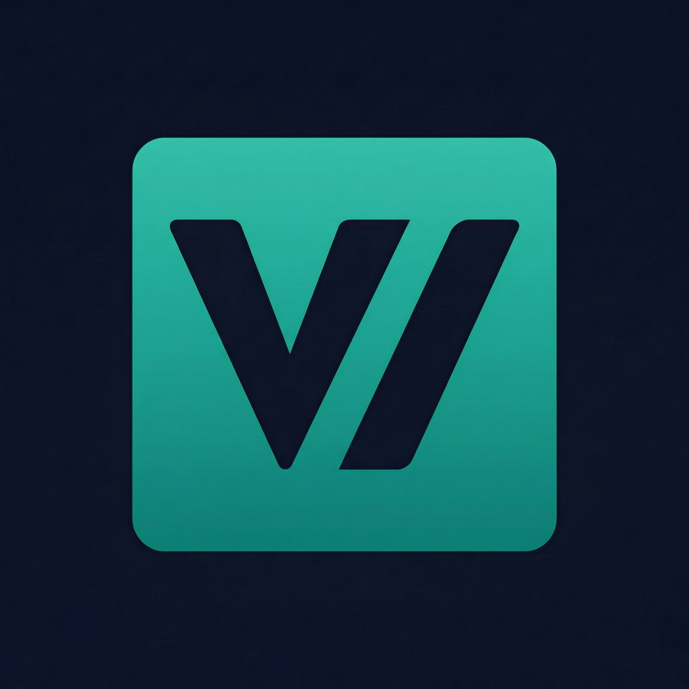

Primary mark · use everywhere

Viktor Vedmich
vedmich.dev · s.vedmich.dev
Viktor Vedmich
On light surface
On brand gradient
mesh-deep · works over every slidev background
Size & radius guide
In context
One mark, one file. vv-logo-hero.png is the only logo — the same 2048×2048 artwork scales from 16px favicon to 200px slide title, and works on dark, light, and gradient surfaces without modification. No flat / inverse / favicon variants — those added inconsistency. If a context needs a mono or inverted mark, we cut it from Hero rather than ship a separate file.
Radius rule. Scale radius with size: 16→4px · 32→6px · 48→6px · 64→8px · 96→16px · 128+→20–24px. Always sit the mark on its own surface — never directly on photography.
A11y ·
Single asset · consistent recognition
Alt text required on every instance
Min display size 16px · favicons rasterized hi-dpi
PNG 2048² source → crisp at all scales; convert to ICO/WebP at build